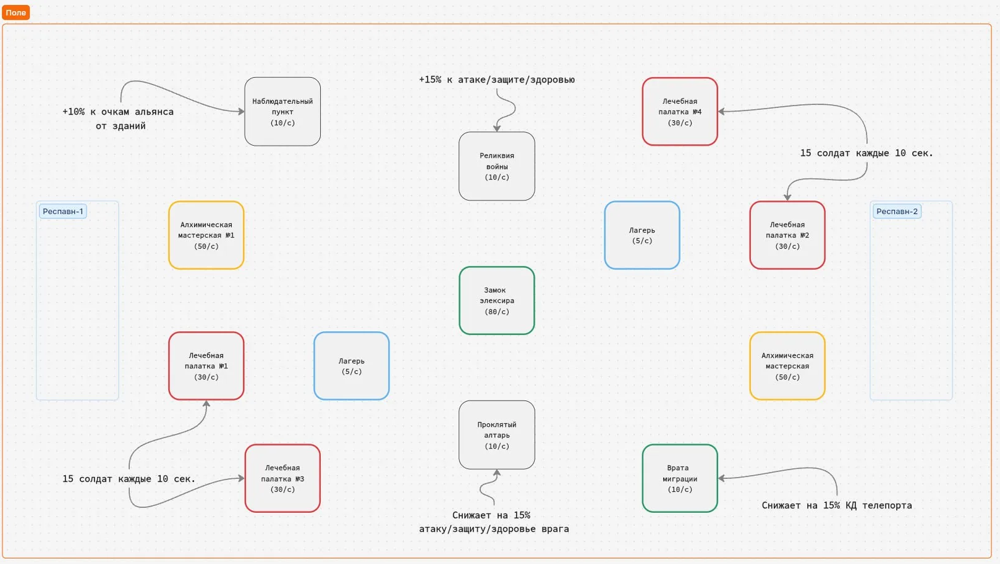
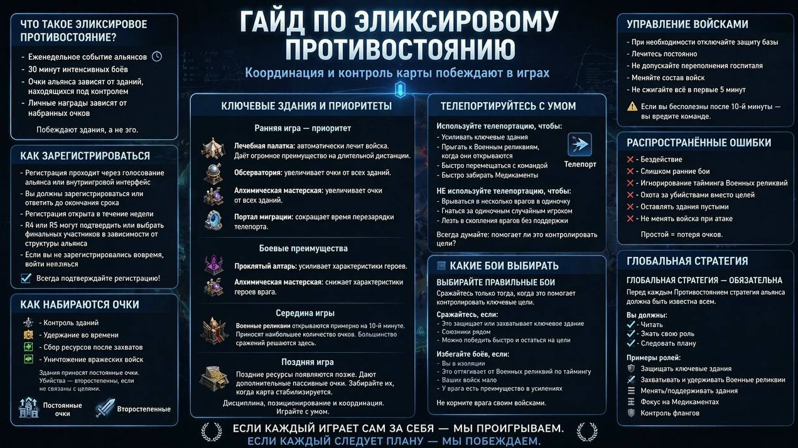

Гонка за эликсиром
🏰 Ключевые строения и их приоритет
На карте 11 строений, и они открываются поэтапно. Вот главные цели:
- Наблюдательный пункт (Обсерватория): открывается с первой минуты, даёт +10% ко всем очкам альянса. Брать его нужно как можно раньше — в начале боя он окупается многократно, а под конец почти бесполезен.
- Врата миграции: доступны сразу, сокращают перезарядку перемещения на 50%, что даёт мобильность и скорость реакции.
- Алхимические мастерские: стоят у входов каждого альянса, дают много очков (30/20) и доступны с первой минуты.
- Замок эликсира: главная цель, открывается на 10-й минуте, даёт больше всего очков (48/32).
- Лечебные палатки: лечат 15 раненых каждые 10 секунд.
- Реликвии войны и Проклятый алтарь: открываются вместе с Замком, дают баф союзникам или дебаф врагам на 15%.
- Лагеря с травами: появляются с 13-й минуты — сбор трав приносит очки без прямого боя.

🎯 Приоритет захвата точек
Порядок захвата по важности и темпам открытия (номера приоритета):
- Наблюдательный пункт — брать первым (+10% ко всем очкам альянса).
- Врата миграции — сразу после, ради мобильности (-50% перезарядки перемещения).
- Алхимическая мастерская у своего входа — «якорь» и стабильный источник очков.
- Замок эликсира — с 10-й минуты главная концентрация сил (48/32).
- Реликвии войны / Проклятый алтарь — баф/дебаф, берут ради контроля над Замком.
- Лечебные палатки — держат армию в бою.
- Лагеря с травами (с 13-й минуты) — очки без боя.

⚔️ Тактика
Строим бой по принципу темпа и мобильности:
- 1. Сначала темп, потом очки. Захватите Наблюдательный пункт и Врата миграции, чтобы получить множитель очков и скорость перемещения. Без этого нас будут переигрывать по всей карте.
- 2. Проверка боем. Более слабые, отправляйте слабые походы первыми. Так вы проверите, стоит ли у врага защита, и не сольёте сильный марш впустую.
- 3. Не защищайтесь всеми силами. Против заведомо более сильного противника лучше снять защиту и сохранить войска, чем отдать их в мясорубке. Основной отряд включайте в оборону только против равного или слабого врага.
- 4. Сбор трав (с 13-й минуты). На карте появляются лагеря с травами. Отправляйте туда отряды (можно слабых), чтобы получать очки без прямого боя.
⏱️ Пошаговый план по фазам
Фаза 1: первые 10 минут — захват темпа
Нельзя просто стоять на точке. Ваша задача — взять здания, которые дают максимальный стартовый разгон.
- Наблюдательный пункт — брать первым, +10% ко всем очкам.
- Врата миграции — критично для контроля, -50% перезарядки перемещения.
- Алхимическая мастерская у своего входа — «якорь» и много очков. Не оставляйте их без защиты.
Фаза 2: 10–13 минут — борьба за центр
На 10-й минуте открывается Замок эликсира.
- Замок эликсира — главная цель, даёт больше всего очков (48/32). Основные силы альянса должны сконцентрироваться на его захвате и удержании. Никогда не покидайте Замок, если он уже ваш; всегда оставляйте там минимум 2–3 защитников.
- Реликвии войны / Проклятый алтарь — ситуативно. Дают баф союзникам или дебаф врагам, берут, если есть свободный сильный отряд, который не нужен в центре. Не распыляйте силы.
Действие: пока основная группа штурмует Замок, отряд поддержки может попытаться взять Реликвии, но только если это не ослабит натиск на центр.
Фаза 3: 13–30 минут — удержание и сбор
- Сбор трав (с 13-й минуты). Отправляйте слабых или освободившихся игроков в лагеря, чтобы они приносили очки без риска потерять ключевые точки.
- Контроль, а не захват. Главная задача — не дать врагу отбить Замок и Обсерваторию. Если у вас численное преимущество на точке, сразу перемещайтесь туда, где нужна помощь.
📜 Ключевые тактические правила
- Всегда атакуйте, не собирайте ралли: атака запускается мгновенно и не может быть отменена.
- Используйте второй отряд для рейдов — отбивайте точки или мешайте сбору, когда основной отряд врага ушёл.
- Не защищайтесь в проигрышном бою: снимайте защиту и сохраняйте войска; основной отряд в оборону — только против равного или слабого противника.
👥 Распределение ролей: 20 бойцов
Бой часто идёт на двух фронтах (две группы по 10 человек), поэтому состав делится на две тактические группы — «Альфа» и «Браво» — плюс два свободных агента.
Группа «Альфа» (10 человек): главный удар и контроль центра
Отвечает за захват и удержание Замка эликсира и Наблюдательного пункта — самых важных объектов по очкам и множителю.
| Роль | Кол-во | Задача и позиция |
|---|---|---|
| Лидер группы (R4/R5) | 1 | Координирует «Альфу», решает о переброске сил на Замок или Обсерваторию; должен быть в центре событий. |
| Тяжёлые штурмовики (Main Force) | 4 | Ядро атаки на Замок эликсира. Заходят первыми, ломают защиту, удерживают здание. |
| Защитники Обсерватории | 2 | Захватывают Наблюдательный пункт на первой минуте и удерживают его (+10% к очкам). |
| Ротация / Поддержка | 3 | Помогают там, где идёт самая жаркая борьба, или мешают врагу на соседних точках. |
Группа «Браво» (10 человек): мобильность, фланги и ресурсы
Отвечает за Врата миграции, Алхимические мастерские и сбор трав — обеспечивает тыл и не даёт врагу переиграть по карте.
| Роль | Кол-во | Задача и позиция |
|---|---|---|
| Лидер группы (R4) | 1 | Координирует «Браво», следит за появлением лагерей с травами и угрозами на флангах. |
| Захватчики Врат миграции | 2 | Приоритет №1 группы: захватывают Врата в первые минуты и удерживают их. |
| Контроль мастерских | 2 | Держат Алхимическую мастерскую у своего входа — стабильный источник очков и «якорь». |
| Сборщики трав (с 13-й минуты) | 3 | Когда появляются лагеря с травами, идут туда и приносят очки без прямого боя. |
| Фланговые рейдеры | 2 | Атакуют вражеские мастерские или лечебные палатки, если основные силы врага ушли. |
Свободные агенты (2 человека): глаза и реакция
Эти двое не привязаны к конкретной группе и действуют по ситуации, закрывая дыры.
| Роль | Кол-во | Задача и позиция |
|---|---|---|
| Разведчик-координатор | 1 | Следит за картой, сообщает о передвижениях врага, замечает точки без защиты. |
| Универсальный дублёр | 1 | Вступает в бой там, где нужна помощь: «Альфе» на Замке или «Браво» на Вратах. |
⚠️ Важное примечание по тактике
Такое распределение не означает, что «Альфа» никогда не помогает «Браво». Лидеры групп должны постоянно быть на связи. Например, если «Браво» видит, что враг стягивает все силы к Замку, их фланговые рейдеры должны немедленно переключиться на помощь «Альфе» в центре. Гибкость и скорость реакции здесь важнее, чем строгое следование ролям.
💡 Сводный гайд по событию
